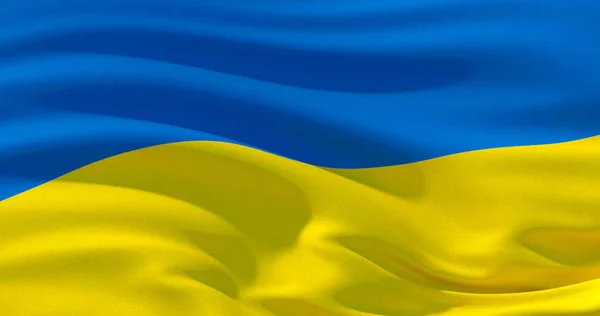
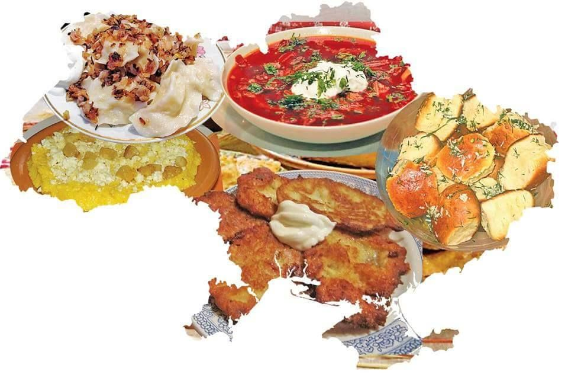

Україна: серце Європи
Географічне положення
Україна — найбільша за площею країна Європи. Вона розташована на сході континенту та межує з Польщею, Словаччиною, Угорщиною, Румунією, Молдовою, Білоруссю та Росією. Столиця держави — місто Київ.

Історія та культура
Україна має тисячолітню історію, що бере початок від часів Київської Русі.
Культурна спадщина країни багата й різноманітна:
Від високих гір Карпат до берегів Чорного моря, від крихітних сіл до великих промислових центрів – Україна є захоплюючим напрямком для подорожей. Окрім чудових пейзажів, Україна має визначні історичні та культурні об’єкти, деякі з яких визнані об’єктами світової спадщини ЮНЕСКО, а саме:
Окрім ресторанів та кафе варто відвідати місцеві ринки фруктів, овочів, трав’яних чаїв та домашніх сирів.
Природа
На території України можна побачити:
- Карпатські гори з мальовничими ландшафтами;
- Безкраї степи півдня;
- Чорне й Азовське моря.
Часто кажуть, що Україна розташована між Сходом та Заходом. Дійсно, українська культура – це яскраве поєднання культур різних народів, які проживали і проживають на території України. Саме це робить її такою цікавою.
Часто кажуть, що Україна розташована між Сходом та Заходом. Дійсно, українська культура – це яскраве поєднання культур різних народів, які проживали і проживають на території України. Саме це робить її такою цікавою.